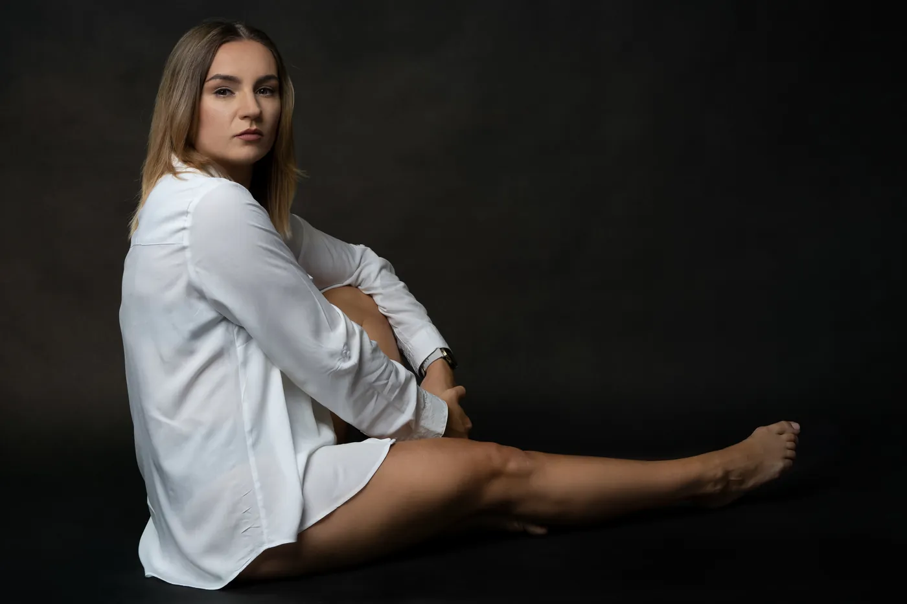
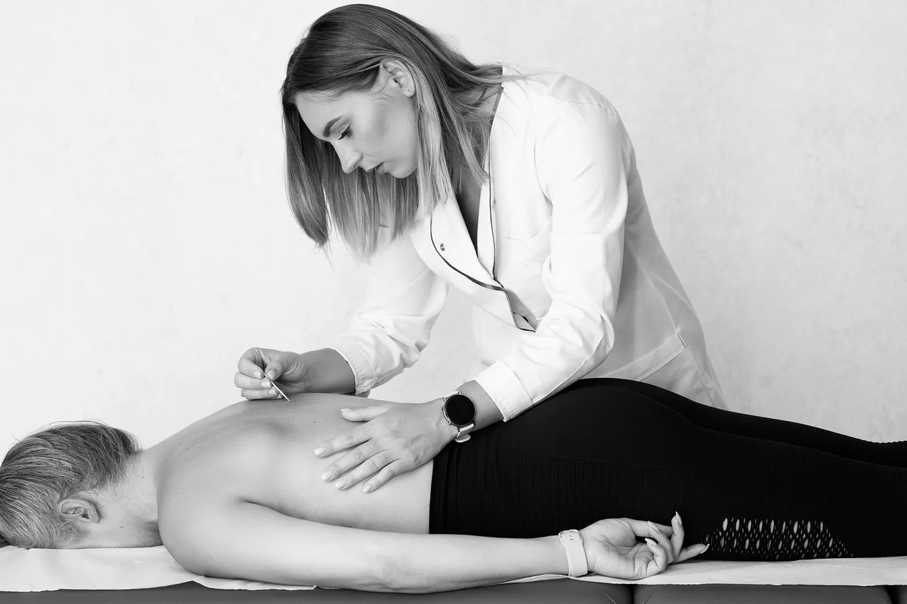
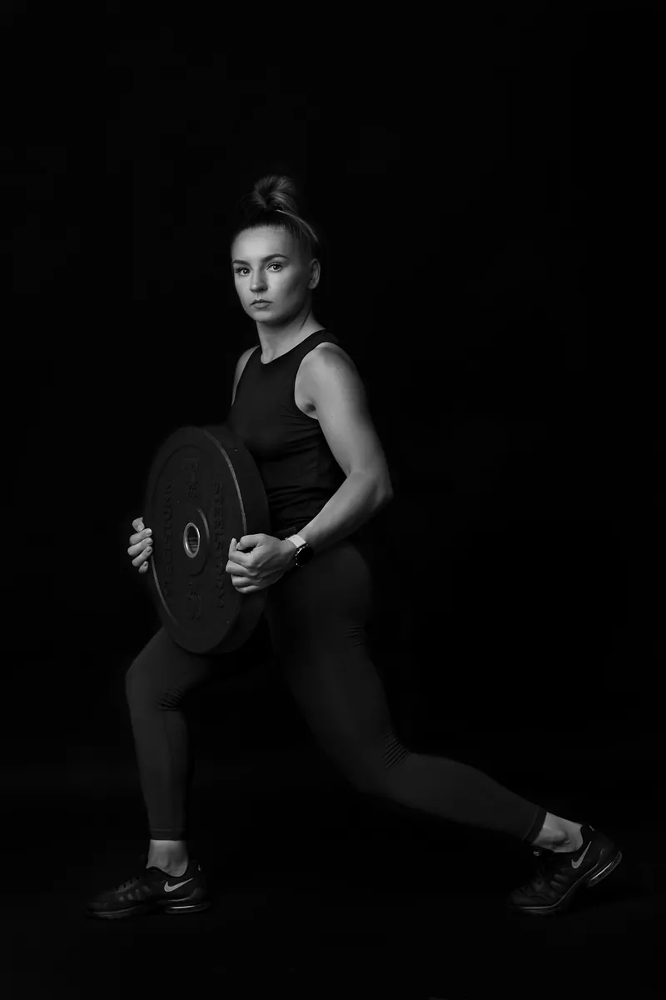
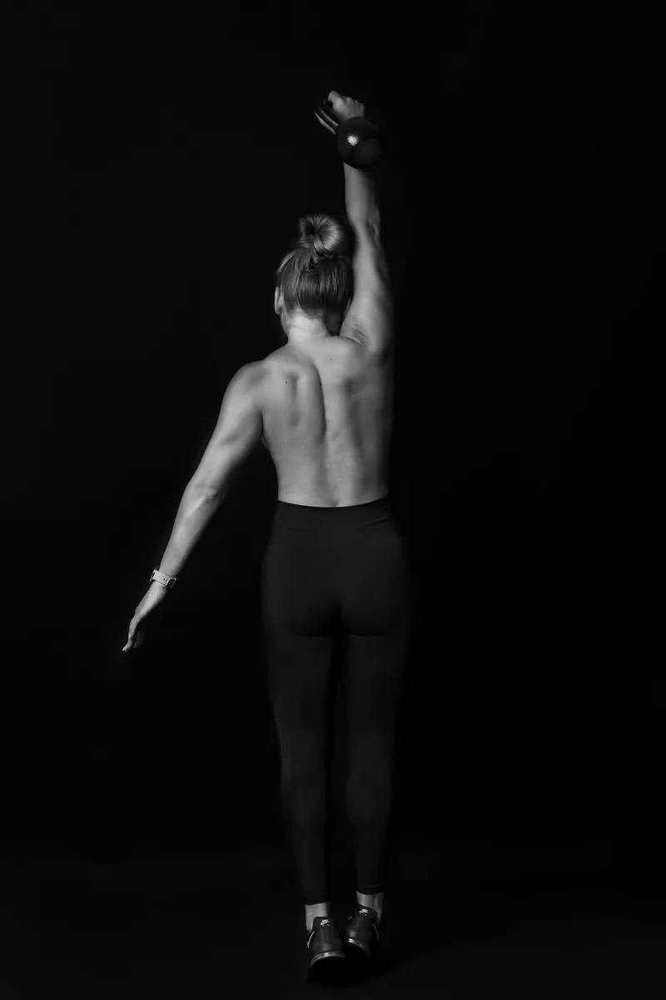
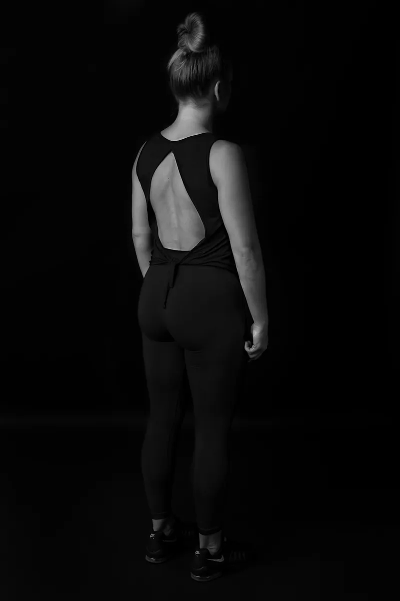
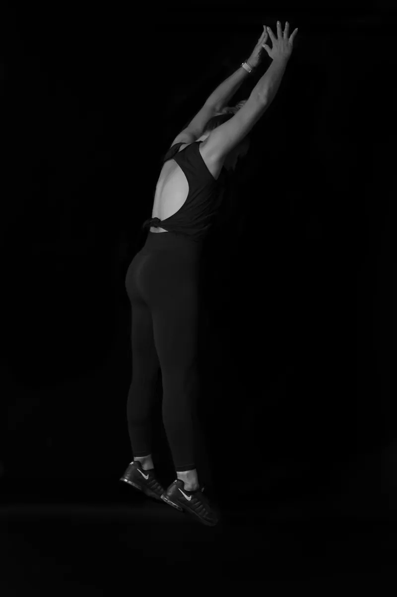
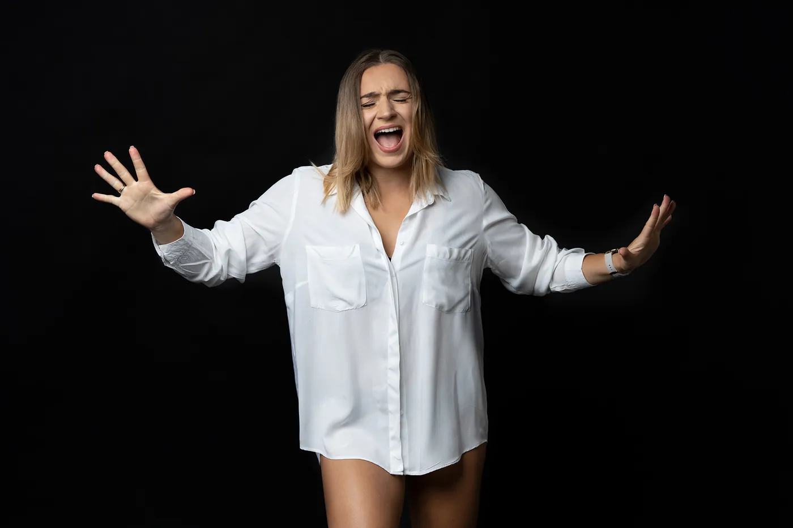
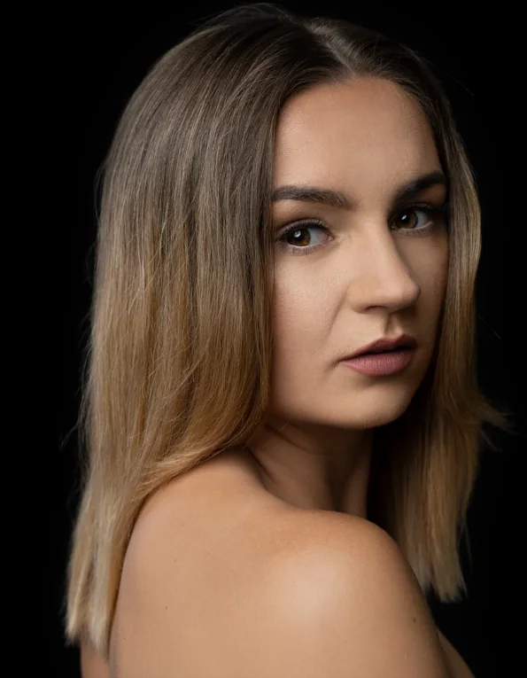

Fizjoterapia i trening personalny w Płazie
Karolina Kośmider, Pani Fizjo-Trener. Trening, fizjoterapia i emocje przenikają się u mnie i tworzą zdrowe, sprawne ciało. Każda osoba jest traktowana indywidualnie.
Umów wizytęW czym mogę Ci pomóc?
Pomagam pozbyć się bólu, dodatkowych kilogramów i skutków ciąży i porodu, takich jak rozejście mięśnia prostego brzucha czy nietrzymanie moczu. Pomagam się zrelaksować i uwolnić zablokowane emocje.

Fizjoterapia: szukam przyczyny bólu
Kiedy kręgosłup boli, to często dlatego, że w ciele dzieje się coś innego. Nie ma jednej metody dla każdego, dlatego dobieram technikę do problemu, z którym przychodzisz, żeby trafić w sedno i jak najszybciej zlikwidować dolegliwości.
- P-DTR
- terapia nerwowo-mięśniowa
- masaż tkanek głębokich
- terapia narzędziowa
- flossing
- kinesiotaping
- masaż relaksacyjny
Zgłoś się, jeżeli
- bolą Cię kolana, plecy lub kręgosłup
- jesteś po porodzie i podejrzewasz rozejście mięśnia prostego brzucha albo masz problem z nietrzymaniem moczu
- cierpisz na migrenę, szumy uszne lub przewlekły problem z zatokami
- nie wysypiasz się
- jesteś po operacji lub zabiegu i chcesz popracować z blizną albo wrócić do sprawności
- trenujesz i ciągle przytrafiają Ci się kontuzje
- masz wadę postawy
Trening personalny pod moim okiem
Możesz przeczytać każdą książkę o treningu i wykupić najdroższy plan. Ale dopiero regularna praca daje efekt, który czujesz na co dzień.
- Masa energiiz przyjemnością wstajesz do pracy i jesteś na wysokich obrotach cały dzień
- Sprawne ciałonawet w mikroskopijnej łazience nie poobijasz się pod prysznicem
- Kondycjado biegania za dziećmi, za autobusem albo za psem
- Piękne kształtysukienka lub koszula leży jak na czerwonym dywanie




Nigdy nie będziesz bardziej gotowy niż w chwili, kiedy wpadło Ci do głowy, że chcesz coś zmienić.
Emocje i kod emocji
Emocji nie wybieramy, pojawiają się same. Każda jest ważna i żadna nie trwa wiecznie. Ważne, żeby nie trzymać ich w sobie.
W gabinecie pracuję metodą kodu emocji. Pozwala ona uwolnić to, co od lat siedzi głęboko w ciele i potrafi rzutować na jego funkcjonowanie. Zablokowane emocje odpowiadają za niepewność, smutek, żal czy niepokój. Kiedy je uwolnisz, do życia wraca radość, a ciało odzyskuje równowagę.
Jeżeli czujesz, że jest ich w Tobie dużo, to najwyższa pora je uwolnić.


O mnie
Nazywam się Karolina Kośmider. Zakochana w ludzkim ciele, oczarowana życiem i twardo stąpająca po ziemi Pani Fizjo-Trener.
Swoją ścieżkę zawodową rozpoczęłam na Akademii Wychowania Fizycznego w Krakowie, broniąc tytuł magistra wychowania fizycznego. Kolejnym etapem były studia Medycyna Sportowa i Fizjoterapia na Akademii Wychowania Fizycznego w Katowicach. Przeszłam drogę od instruktora fitness, przez trenera personalnego i nauczyciela wychowania fizycznego, aż po fizjoterapeutę.
Moja praca to moja pasja, a każda osoba, która trafia pod moje skrzydła, jest traktowana indywidualnie. Ciągle się uczę i zagłębiam w tajniki ludzkiego ciała.
Szkolenia z fizjoterapii
- Syntonic Szkolenia Medyczne - P-DTR Basic
- Femme Medica - certyfikowany terapeuta rozejścia mięśnia prostego brzucha oraz osłabionych mięśni dna miednicy
- Projekt Masaż - Terapia Nerwowo-Mięśniowa (neurodiagnostyka i terapia)
- Projekt Masaż - Masaż tkanek głębokich
- Neuro Projekt - Fundamenty ruchu
- Neuro Projekt - Neurodiagnostyka i terapia w bólach kolan i kończyny dolnej
- Neuro Projekt - Neurodiagnostyka i terapia w bólach głowy
Pozostałe szkolenia z fizjoterapii
- PFS Diagnostyka Funkcjonalna
- PFS Zdrowy Kręgosłup
- PFS Core Stability Level I
- Kinesiotaping
- PFS Flossing - technika wspomagająca terapię
Trening personalny i fitness
- Kuźnia Trenerów - Basic Personal Trainer
- Akademia Treningu Siłowego - programowanie treningu siłowego, poziom I
- PFS Trening funkcjonalny
- PFS Mobilność i stabilność ze sprzętem
- Open Mind - Pilates dla kobiet w ciąży i po porodzie
- Jacek Bilczyński Lifestyle Coach - zdrowa redukcja u kobiet
- PFS Dietetyka i Suplementacja - poziom I
Pozostałe szkolenia z treningu
- Open Mind - Instruktor fitness
- Open Mind - Step Instruktor
- Open Mind - Aerobik Instruktor
- Open Mind - Body Instruktor
- Open Mind - Warsztaty Stretching Powięziowy
- PFS Aerobics Choreography Instructor
- PFS Stretching Instructor
- PFS TBC Full Equipment
- PFS Diagnostyka Funkcjonalna
- PFS Powerband & Miniband
- GT trening
- PFS Kettlebells Training / Taśmy podwieszane
- PFS Fit Ball
- Trening umiejętności społecznych
Umów wizytę
Napisz albo zadzwoń i powiedz, w czym mogę Ci pomóc.
- Telefon
- 513 916 103
- Gabinet
- ul. Czarnieckiego 6
32-552 Płaza - karolinakosmiderfizjoterapia